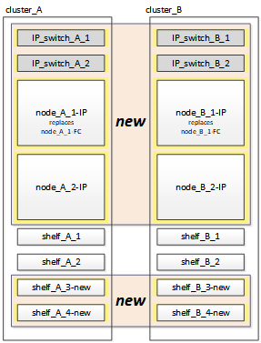
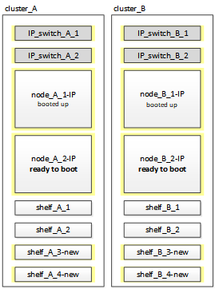

要求變更文件
要求變更文件 編輯此頁面
編輯此頁面 瞭解如何作出貢獻
瞭解如何作出貢獻連接MetroCluster 靜態IP控制器模組
您必須在組態中新增四個新的控制器模組和任何其他儲存磁碟櫃。新的控制器模組會一次新增兩個。
設定新的控制器
您必須將新MetroCluster 的靜態IP控制器機架和纜線連接至先前連接MetroCluster 至該功能的儲存櫃。
這些步驟必須在MetroCluster 每個E各種 知識型IP節點上執行。
-
節點_a_1-IP
-
節點_a_2-IP
-
節點_B_1-IP
-
節點_B_2-IP
在下列範例中、每個站台會新增兩個額外的儲存磁碟櫃、以提供儲存設備來容納新的控制器模組。

-
視需要規劃新控制器模組和儲存櫃的定位。
機架空間取決於控制器模組的平台模式、交換器類型、以及組態中的儲存櫃數量。
-
請妥善接地。
-
裝入新設備：控制器、儲存櫃和IP交換器。
此時請勿纜線連接儲存櫃或IP交換器。
-
將電源線和管理主控台連線連接至控制器。
-
確認所有儲存櫃均已關機。
-
請在所有四個節點上執行下列步驟、確認未連接磁碟機：
-
在載入程式提示下、啟動開機功能表：
Boot_ONTAP maint
-
確認未連接磁碟機：
「展示-v」
輸出應顯示無磁碟機。
-
停止節點：
《停止》
-
-
使用開機功能表上的9a選項來開機所有四個節點。
-
在載入程式提示下、啟動開機功能表：
Boot_ONTAP功能表
-
在開機功能表中、選取選項「'9a'」以重新啟動控制器。
-
在移至下一個控制器模組之前、請先讓控制器模組完成開機。
「9a」完成後、節點會自動返回開機功能表。
-
-
連接儲存櫃。
如需纜線連接資訊、請參閱您機型的控制器安裝與設定程序。
-
如所述、將控制器連接至IP交換器 "IP交換器佈線"。
-
準備IP交換器以應用新的RCF檔案。
請依照交換器廠商的步驟進行：
-
下載並安裝RCF檔案。
請依照交換器廠商的步驟進行：
-
開啟第一個新控制器（node_a_1-IP）的電源、然後按Ctrl-C中斷開機程序、並顯示載入器提示。
-
將控制器開機至維護模式：
Boot_ONTAP_maint
-
顯示控制器的系統ID：
"syssconfig -v"
-
確認從現有組態中看到的磁碟櫃可從新MetroCluster 的視覺化IP節點看到：
《展示櫃》《展示櫃——v》
-
停止節點：
《停止》
-
在合作夥伴站台（站台_B）的其他節點上重複上述步驟。
連接並啟動node_a_1-IP和node_B_1-IP
連接MetroCluster 完靜態IP控制器和IP交換器之後、您可以轉換並啟動node_a_1-IP和node_B_1-IP。
啟動node_a_1-IP
您必須使用正確的轉換選項來開機節點。
-
將node_a_1-IP開機至開機功能表：
Boot_ONTAP功能表
-
在開機功能表提示字元中輸入下列命令、以啟動轉換：
"boot_after管理協調轉換"
-
此命令會將node_a_1-FC擁有的所有磁碟重新指派給node_a_1-IP。
-
節點_a_1-FC磁碟會指派給node_a_1-IP
-
節點_B_1-FC磁碟會指派給node_B_1-IP
-
-
此命令也會自動重新指派其他必要的系統ID、以便MetroCluster 將支援的IP節點開機至ONTAP 畫面提示字元。
-
如果boot_after管理協調轉換命令因為任何原因而失敗、應該從開機功能表重新執行。

-
如果顯示下列提示、請輸入Ctrl-C繼續。正在檢查MCC DR狀態… [輸入Ctrl-C（恢復）、S（狀態）、L（連結）]_
-
如果根磁碟區已加密、則節點會停止並顯示下列訊息。停止系統、因為根磁碟區已加密（NetApp Volume Encryption）且金鑰匯入失敗。如果此叢集已設定外部（KMIP）金鑰管理程式、請檢查金鑰伺服器的健全狀況。
Please choose one of the following: (1) Normal Boot. (2) Boot without /etc/rc. (3) Change password. (4) Clean configuration and initialize all disks. (5) Maintenance mode boot. (6) Update flash from backup config. (7) Install new software first. (8) Reboot node. (9) Configure Advanced Drive Partitioning. Selection (1-9)? `boot_after_mcc_transition` This will replace all flash-based configuration with the last backup to disks. Are you sure you want to continue?: yes MetroCluster Transition: Name of the MetroCluster FC node: `node_A_1-FC` MetroCluster Transition: Please confirm if this is the correct value [yes|no]:? y MetroCluster Transition: Disaster Recovery partner sysid of MetroCluster FC node node_A_1-FC: `systemID-of-node_B_1-FC` MetroCluster Transition: Please confirm if this is the correct value [yes|no]:? y MetroCluster Transition: Disaster Recovery partner sysid of local MetroCluster IP node: `systemID-of-node_B_1-IP` MetroCluster Transition: Please confirm if this is the correct value [yes|no]:? y
-
-
-
如果資料磁碟區已加密、請使用適用於金鑰管理組態的正確命令來還原金鑰。
如果您使用…
使用此命令…
機載金鑰管理
「安全金鑰管理程式內建同步」
如需詳細資訊、請參閱 "還原內建金鑰管理加密金鑰"。
外部金鑰管理
「安全金鑰管理程式金鑰查詢節點節點名稱」
如需詳細資訊、請參閱 "還原外部金鑰管理加密金鑰"。
-
如果根磁碟區已加密、請使用中的程序 "如果根磁碟區已加密、則會恢復金鑰管理"。
如果根磁碟區已加密、則會恢復金鑰管理
如果根磁碟區已加密、您必須使用特殊的開機命令來還原金鑰管理。
您必須擁有先前收集的密碼。
-
如果使用內建金鑰管理、請執行下列子步驟來還原組態。
-
在載入程式提示字元中、顯示開機功能表：
Boot_ONTAP功能表
-
從開機功能表中選取選項「（10）Set Onboard Key Management Recovery Secrets」（設定內建金鑰管理還原機密）。
視需要回應提示：
This option must be used only in disaster recovery procedures. Are you sure? (y or n): y Enter the passphrase for onboard key management: passphrase Enter the passphrase again to confirm: passphrase Enter the backup data: backup-key
系統會開機至開機功能表。
-
在開機功能表中輸入選項「6」。
視需要回應提示：
This will replace all flash-based configuration with the last backup to disks. Are you sure you want to continue?: y Following this, the system will reboot a few times and the following prompt will be available continue by saying y WARNING: System ID mismatch. This usually occurs when replacing a boot device or NVRAM cards! Override system ID? {y|n} y重新開機後、系統會出現載入程式提示。
-
在載入程式提示字元中、顯示開機功能表：
Boot_ONTAP功能表
-
再次從開機功能表中選取選項「（10）set on板 載金鑰管理恢復機密」。
視需要回應提示：
This option must be used only in disaster recovery procedures. Are you sure? (y or n): `y` Enter the passphrase for onboard key management: `passphrase` Enter the passphrase again to confirm:`passphrase` Enter the backup data:`backup-key`
系統會開機至開機功能表。
-
在開機功能表中輸入選項「1」。
如果顯示下列提示、您可以按下Ctrl+C繼續進行程序。
Checking MCC DR state... [enter Ctrl-C(resume), S(status), L(link)]
系統會開機至ONTAP 畫面提示。
-
還原內建金鑰管理：
「安全金鑰管理程式內建同步」
使用您先前收集的通關密碼、視需要回應提示：
cluster_A::> security key-manager onboard sync Enter the cluster-wide passphrase for onboard key management in Vserver "cluster_A":: passphrase
-
-
如果使用外部金鑰管理、請執行下列子步驟來還原組態。
-
設定所需的bootargs：
「bootarg.kmip.init.ipaddr IP位址」
"etenv bootarg.kmip.init.netmask netask"
"etenv bootarg.kmip.init.gateway gateway-address"
"etenv bootarg.kmip.init.interface interface-id"
-
在載入程式提示字元中、顯示開機功能表：
Boot_ONTAP功能表
-
從開機功能表中選取選項「（11）Configure Node for external key management」（設定外部金鑰管理節點）。
系統會開機至開機功能表。
-
在開機功能表中輸入選項「6」。
系統會多次開機。當系統提示您繼續開機程序時、您可以做出肯定的回應。
重新開機後、系統會出現載入程式提示。
-
設定所需的bootargs：
「bootarg.kmip.init.ipaddr IP位址」
"etenv bootarg.kmip.init.netmask netask"
"etenv bootarg.kmip.init.gateway gateway-address"
"etenv bootarg.kmip.init.interface interface-id"
-
在載入程式提示字元中、顯示開機功能表：
Boot_ONTAP功能表
-
再次從開機功能表中選取選項「（11）Configure Node for external key management」（設定外部金鑰管理節點）、並視需要回應提示。
系統會開機至開機功能表。
-
還原外部金鑰管理：
「安全金鑰管理程式外部還原」
-
建立網路組態
您必須建立符合FC節點上組態的網路組態。這是因為MetroCluster 當執行此動作時、Sfetsip節點會重新執行相同的組態、也就是說、當節點_a_1-IP和node_B_1-IP開機時ONTAP 、Sf2會嘗試在節點_a_1-FC和node_B_1-FC上分別使用的相同連接埠上裝載LIF。
建立網路組態時、請使用中的計畫 "將連接埠從MetroCluster 靜態FC節點對應至MetroCluster 靜態IP節點" 協助您。
|
|
設定完整套IP節點之後、可能需要額外的組態來啟動資料生命期MetroCluster 。 |
-
確認所有叢集連接埠都位於適當的廣播網域中：
若要建立叢集生命期、需要叢集IPspace和叢集廣播網域
-
檢視IP空間：
「網路IPSpace節目」
-
視需要建立IP空間並指派叢集連接埠。
-
檢視廣播網域：
「網路連接埠廣播網域節目」
-
視需要將任何叢集連接埠新增至廣播網域。
-
視需要重新建立VLAN和介面群組。
VLAN和介面群組成員資格可能與舊節點不同。
-
-
確認已針對連接埠和廣播網域正確設定MTU設定、並使用下列命令進行變更：
「網路連接埠廣播網域節目」
「網路連接埠廣播網域修改-broadcast網域_bcastdomainname_-MTU MTU值」
設定叢集連接埠和叢集生命區
您必須設定叢集連接埠和LIF。需要在使用根集合體開機的站台A節點上執行下列步驟。
-
使用所需的叢集連接埠識別LIF清單：
「網路介面show -curr-port portname」
「網路介面show -home-port portname」
-
針對每個叢集連接埠、將該連接埠上任何一個LIF的主連接埠變更為另一個連接埠、
-
進入進階權限模式、並在系統提示您繼續時輸入「y」：
《et priv進階》
-
如果要修改的LIF是資料LIF：
「vserver config override -command」（vserver組態置換命令命令）「network interface modify -lif_lifname_-vserver vservernames-home-port new－datahomeport」（網路介面修改-lif_lifname_-
-
如果LIF不是資料LIF：
「網路介面修改-lif_lifname_-vserver vservernames-home-port new - datahomeport」
-
將修改後的l生命 恢復到其主連接埠：
「網路介面回復*-vserver vserver_name」
-
驗證叢集連接埠上是否沒有任何lifs：
「網路介面show -curr-port portname」
「網路介面show -home-port portname」
-
從目前的廣播網域移除連接埠：
「網路連接埠廣播網域移除連接埠-IPSpace ipspacename-broadcast網域_bcastdomainname_-連接埠_node_name:port_name_」
-
將連接埠新增至叢集IPspace和廣播網域：
「網路連接埠廣播網域附加連接埠-IPSpace叢集-broadcast網域叢集-ports_node_name:port_name_'
-
確認連接埠的角色已變更：「network port show」（網路連接埠顯示）
-
針對每個叢集連接埠重複這些子步驟。
-
返回管理模式：
「et priv admin」
-
-
在新的叢集連接埠上建立叢集LIF：
-
若要使用叢集LIF的連結本機位址自動設定、請使用下列命令：
「網路介面create -vserver cluster -lif_cluster_lifname_-service-policy default-cluster-home-node_a1name_-home-port clusterport -autotrue」
-
若要指派叢集LIF的靜態IP位址、請使用下列命令：
「網路介面create -vserver cluster -lif_cluster_lifname_-service-policy default-cluster -home-node_a1name_-home-port clusterport-address_ip-address_-netmanetma_netmanetask_-ste-admin up」
-
正在驗證LIF組態
從舊控制器移出儲存設備之後、節點管理LIF、叢集管理LIF和叢集間LIF仍會存在。如有必要、您必須將LIF移至適當的連接埠。
-
驗證管理LIF和叢集管理LIF是否已在所需的連接埠上：
「網路介面show -service-policy default-management」
「網路介面show -service-policy default-intercluster」
如果生命期位於所需的連接埠上、您可以跳過此工作的其餘步驟、然後繼續執行下一個工作。
-
對於不在所需連接埠上的每個節點、叢集管理或叢集間生命體、請將該連接埠上任何生命體的主連接埠變更為另一個連接埠。
-
將託管在所需連接埠上的任何LIF移至另一個連接埠、藉此重新規劃所需連接埠的用途：
「vserver config override -command」（vserver組態置換命令命令）「network interface modify -lif_lifname_-vserver vservernames-home-port new－datahomeport」（網路介面修改-lif_lifname_-
-
將修改後的生命期恢復到新的主連接埠：
「vserver config override -command「network interface fert revert -lif_lifname_-vserver _vservername"」
-
如果所需的連接埠不在適當的IPspace和廣播網域中、請從目前的IPspace和廣播網域中移除連接埠：
「網路連接埠廣播網域移除連接埠-IPSpace currer-IPspacity-broadcast網域_currer-s廣播 網域_-ports system-name:電流 連接埠」
-
將所需的連接埠移至適當的IPspace和廣播網域：
「網路連接埠廣播網域附加連接埠-IPSpace NEUT-IPspac_-broadcast網域_NEUT-SPODO_-ports_system-name:NEUT-port_」
-
確認連接埠的角色已變更：
「網路連接埠展示」
-
對每個連接埠重複這些子步驟。
-
-
將節點、叢集管理lifs和叢集間LIF移至所需的連接埠：
-
變更LIF的主連接埠：
「網路介面修改-vserver vserver-lif node_mgmt-home-port port-home-node_homenode_」
-
將LIF還原至新的主連接埠：
"network interface revert -lif_norm_mgmt_-vserver vservername"
-
變更叢集管理LIF的主連接埠：
「網路介面修改-vserver vserver-lif_cluster管理-lif-name_-home-port port-home-node-homenod__」
-
將叢集管理LIF還原至新的主連接埠：
「網路介面還原-lif_cluster管理-lif-name_-vserver vservernames」
-
變更叢集間LIF的主連接埠：
「網路介面修改-vserver vserver-lif_intere-lif-name_-home-node-nodename_-home-port port」
-
將叢集間LIF還原為新的主連接埠：
「網路介面還原-lif_intercluster lif-name_-vserver vservernamer」
-
啟動node_a_2-IP和node_B_2-IP
您必須在MetroCluster 每個站台上啟動並設定新的靜態IP節點、在每個站台建立HA配對。
啟動node_a_2-IP和node_B_2-IP
您必須使用開機功能表中的正確選項、一次開機一個新的控制器模組。
在這些步驟中、您會開機兩個全新節點、將兩個節點的組態擴充為四個節點的組態。
這些步驟會在下列節點上執行：
-
節點_a_2-IP
-
節點_B_2-IP

-
使用開機選項「'9c'」開機新節點。
Please choose one of the following: (1) Normal Boot. (2) Boot without /etc/rc. (3) Change password. (4) Clean configuration and initialize all disks. (5) Maintenance mode boot. (6) Update flash from backup config. (7) Install new software first. (8) Reboot node. (9) Configure Advanced Drive Partitioning. Selection (1-9)? 9c
節點會初始化並開機至節點設定精靈、如下所示。
Welcome to node setup You can enter the following commands at any time: "help" or "?" - if you want to have a question clarified, "back" - if you want to change previously answered questions, and "exit" or "quit" - if you want to quit the setup wizard. Any changes you made before quitting will be saved. To accept a default or omit a question, do not enter a value. . . .
如果選項「'9c'」失敗、請採取下列步驟以避免可能的資料遺失：
-
請勿嘗試執行選項9a。
-
從原始MetroCluster 的支援功能FC組態（Shel_a_1、Shelfor_a_2、Shel_B_1、Shel_B_2）中、實際中斷現有包含資料的磁碟櫃的連線。
-
請聯絡技術支援部門、參考知識庫文章 "從選項9c移轉至IP的過程失敗MetroCluster"。
-
-
依照精靈提供的指示啟用AutoSupport 「支援功能」工具。
-
回應設定節點管理介面的提示。
Enter the node management interface port: [e0M]: Enter the node management interface IP address: 10.228.160.229 Enter the node management interface netmask: 225.225.252.0 Enter the node management interface default gateway: 10.228.160.1
-
確認儲存容錯移轉模式設定為HA：
「儲存容錯移轉顯示欄位模式」
如果模式不是HA、請設定：
"torage容錯移轉修改-mode ha -nod_norlocalhost_"
然後、您必須重新啟動節點、變更才會生效。
-
列出叢集中的連接埠：
「網路連接埠展示」
如需完整的命令語法、請參閱手冊頁。
以下範例顯示cluster01中的網路連接埠：
cluster01::> network port show Speed (Mbps) Node Port IPspace Broadcast Domain Link MTU Admin/Oper ------ --------- ------------ ---------------- ----- ------- ------------ cluster01-01 e0a Cluster Cluster up 1500 auto/1000 e0b Cluster Cluster up 1500 auto/1000 e0c Default Default up 1500 auto/1000 e0d Default Default up 1500 auto/1000 e0e Default Default up 1500 auto/1000 e0f Default Default up 1500 auto/1000 cluster01-02 e0a Cluster Cluster up 1500 auto/1000 e0b Cluster Cluster up 1500 auto/1000 e0c Default Default up 1500 auto/1000 e0d Default Default up 1500 auto/1000 e0e Default Default up 1500 auto/1000 e0f Default Default up 1500 auto/1000 -
結束「節點設定精靈」：
「退出」
-
使用管理員使用者名稱登入admin帳戶。
-
使用叢集設定精靈加入現有的叢集。
:> cluster setup Welcome to the cluster setup wizard. You can enter the following commands at any time: "help" or "?" - if you want to have a question clarified, "back" - if you want to change previously answered questions, and "exit" or "quit" - if you want to quit the cluster setup wizard. Any changes you made before quitting will be saved. You can return to cluster setup at any time by typing "cluster setup". To accept a default or omit a question, do not enter a value. Do you want to create a new cluster or join an existing cluster? {create, join}: join -
完成「叢集設定」精靈並結束之後、請確認叢集處於作用中狀態且節點正常：
「叢集展示」
-
停用磁碟自動指派：
「torage disk option modify -autodassign off-node_a_2-ip」
-
如果使用加密、請使用適用於金鑰管理組態的正確命令來還原金鑰。
如果您使用…
使用此命令…
機載金鑰管理
「安全金鑰管理程式內建同步」
如需詳細資訊、請參閱 "還原內建金鑰管理加密金鑰"。
外部金鑰管理
「安全金鑰管理程式金鑰查詢-node-name_」
如需詳細資訊、請參閱 "還原外部金鑰管理加密金鑰"。
-
在第二個新的控制器模組（node_B_2-IP）上重複上述步驟。
驗證MTU設定
確認已針對連接埠和廣播網域正確設定MTU設定、並進行變更。
-
檢查叢集廣播網域中使用的MTU大小：
「網路連接埠廣播網域節目」
-
如有必要、請視需要更新MTU大小：
「網路連接埠廣播網域修改-broadcast網域_bcast網域名稱_-MTU MTU大小」
正在設定叢集間LIF
設定叢集對等所需的叢集間生命體。
此工作必須同時在節點節點節點節點節點（node_a_2-IP和node_B_2-IP）上執行。
-
設定叢集間的LIF。請參閱 "正在設定叢集間LIF"
驗證叢集對等
確認叢集A和叢集B已連接、且每個叢集上的節點可以彼此通訊。
-
驗證叢集對等關係：
「叢集同儕健康展」
cluster01::> cluster peer health show Node cluster-Name Node-Name Ping-Status RDB-Health Cluster-Health Avail… ---------- --------------------------- --------- --------------- -------- node_A_1-IP cluster_B node_B_1-IP Data: interface_reachable ICMP: interface_reachable true true true node_B_2-IP Data: interface_reachable ICMP: interface_reachable true true true node_A_2-IP cluster_B node_B_1-IP Data: interface_reachable ICMP: interface_reachable true true true node_B_2-IP Data: interface_reachable ICMP: interface_reachable true true true -
Ping以檢查對等位址是否可連線：
「叢集對等ping -始發節點_local-node-d節點_-destination-cluster reme-cluster name」